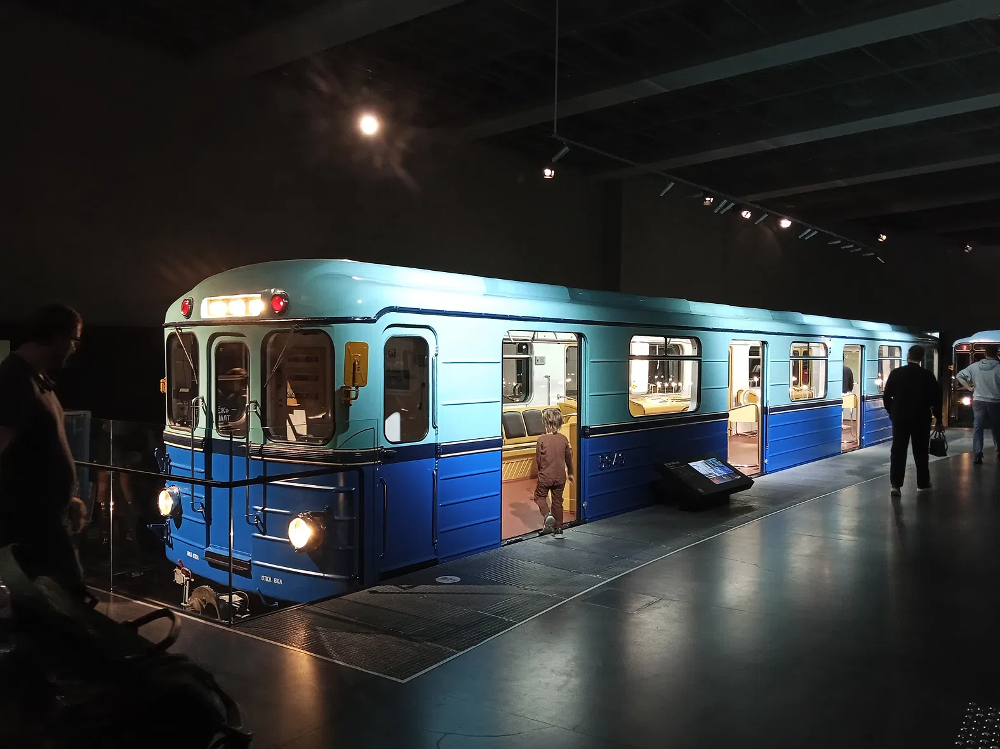
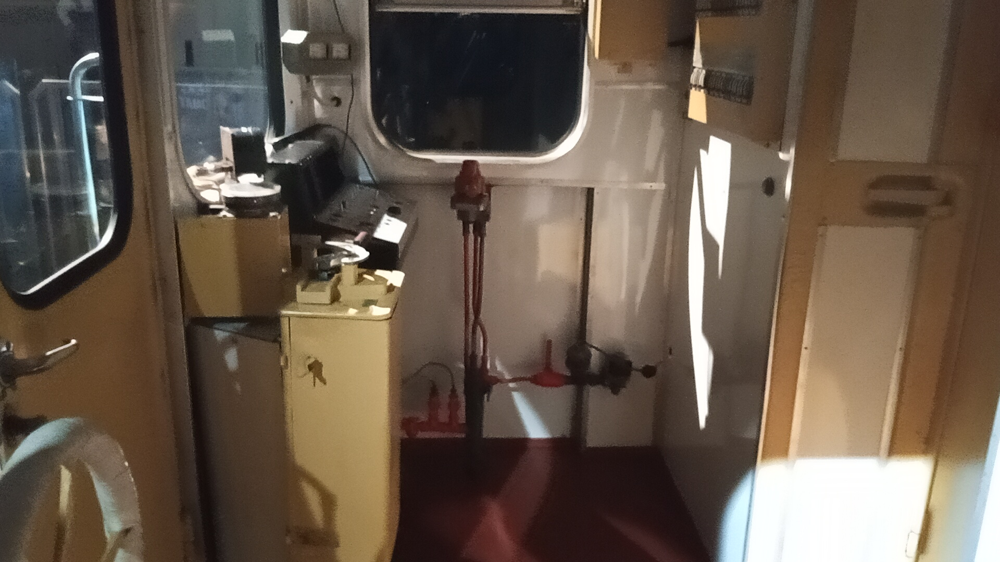
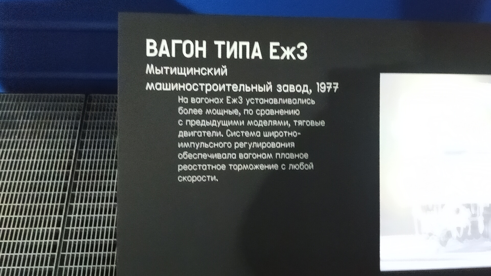

Еж3 № 5946
Еж3 № 5946 — легендарный «Ёжик», построенный в январе 1977 года. Прошёл долгий путь от пассажирской эксплуатации до восстановления в качестве музейного экспоната в коллекции Музея Транспорта Москвы.
Основные данные
| Модель | Еж3 (81-710) |
| Номер | 5946 |
| Год постройки | 01.1977 |
| Город | Москва 🇷🇺 |
| Текущее состояние | Не эксплуатируется |
| Назначение | Музейный |
| Депо/Парк | Музей транспорта Москвы |
История
Постройка и начало службы
Вагон построен и поступил в эксплуатацию.
Работа в депо «Планерное»
Длительное время вагон числился в депо ТЧ-6 «Планерное».
Обкатка путей
Использовался для накатки путей в депо ТЧ-18 «Солнцево».
Реставрация
Вагон проходил восстановление на ВРК «Выхино». Ранее, в 11.2018, числился в ТЧ-11 «Выхино».
Передача в музей
Вагон доставлен в Музей транспорта Москвы.
Интересные факты
Один из последних: Вагон № 5946 был частью одного из трёх последних составов модели Еж3, работавших в депо ТЧ-11 «Выхино». Это делает его особенно ценным экземпляром для истории Московского метрополитена.
Фотогалерея

В экспозиции Музея Транспорта Москвы.

Внутреннее убранство.

Рабочее место машиниста.

Музейная информация.
Нажмите на фото для увеличения